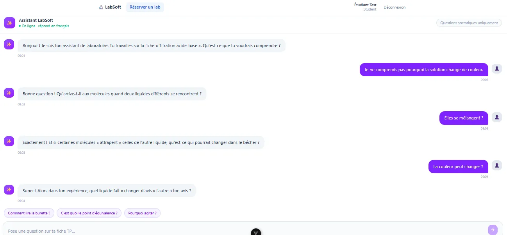
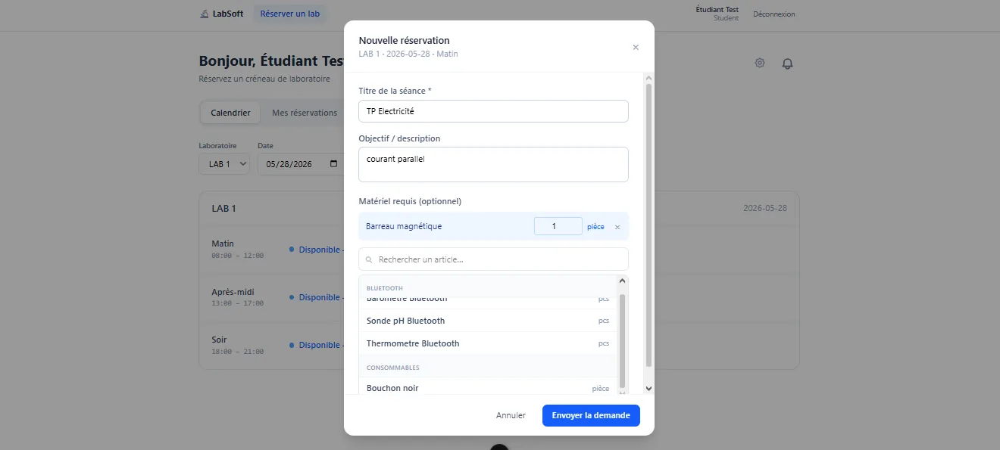
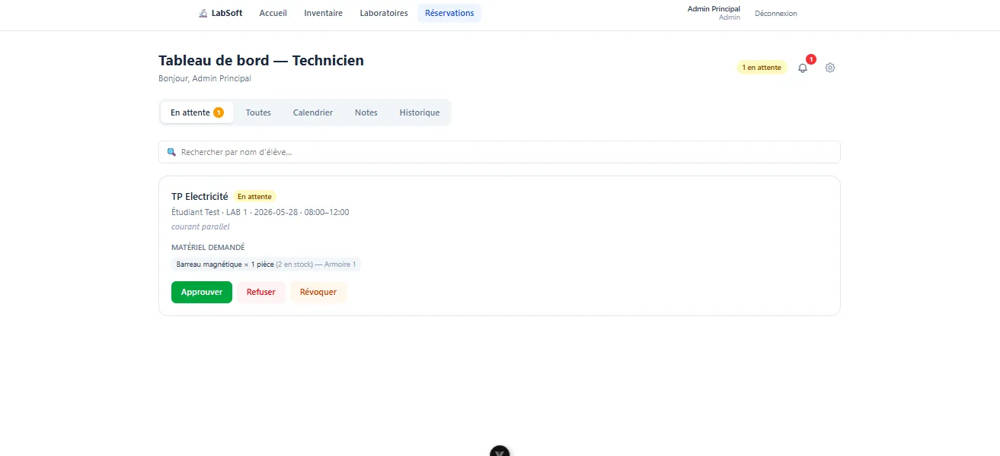
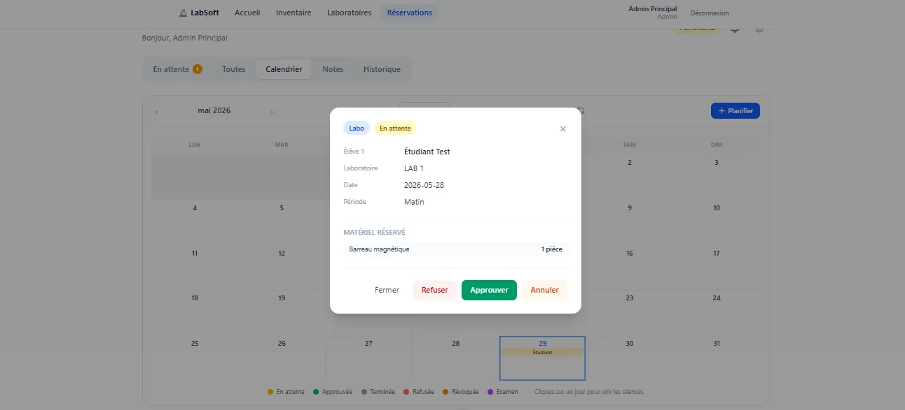
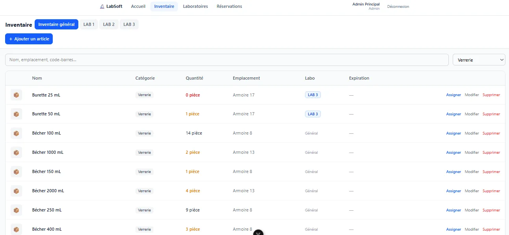

LabSoft
A lab management platform for an adult education centre in Quebec. Learners book lab sessions and get help from an AI assistant, technicians manage stock, and grades go straight to Moodle.

The demo runs the real interface on sample data, entirely in your browser. There is no server, so the AI assistant, uploads and Excel import are switched off.
What it does
Book a lab
Learners pick a lab, a time slot and the materials they need. Double bookings are blocked.
Approve and track stock
Technicians approve requests from a queue. Each lab’s stock updates, with low items highlighted.
AI lab assistant
Learners ask questions during practical work. Answers come from the teacher’s own lab sheets.
Grades to Moodle
Practical exam grades go straight to the Moodle gradebook, with no re-typing.
Screenshots








Under the hood
Local AI
Mistral runs through Ollama and answers from passages of uploaded PDFs (RAG). Nothing is sent to an outside AI service.
Per-learner AI instructions
Admins set the assistant’s instructions for everyone. Teachers can add notes for a single learner, used only in that learner’s chats.
Moodle Web Services
Six REST functions look up courses, learners and grade items, and push grades.
Four roles
Learner, technician, teacher and admin, each checked on the server across 67 API endpoints.
Full tech stack
- Front end
- Back end
- AI
- Integration
- Hosting and desktop
Working prototype, not rolled out at the centre. The code is on GitHub, and you can try the interface in the demo.